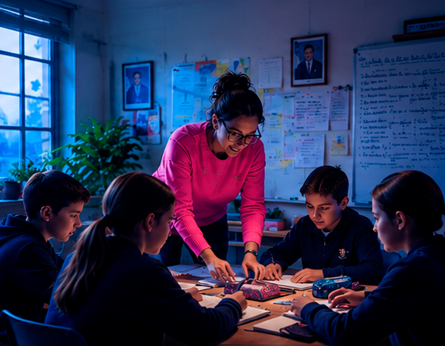
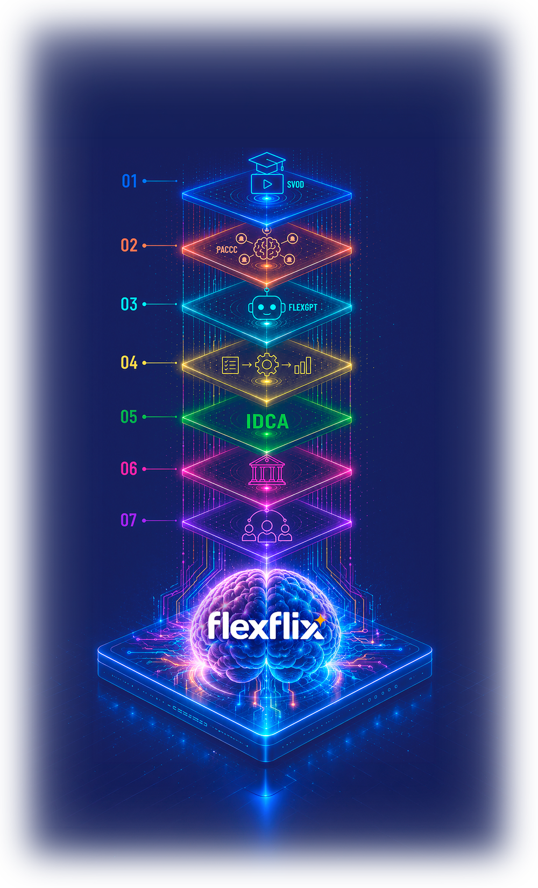
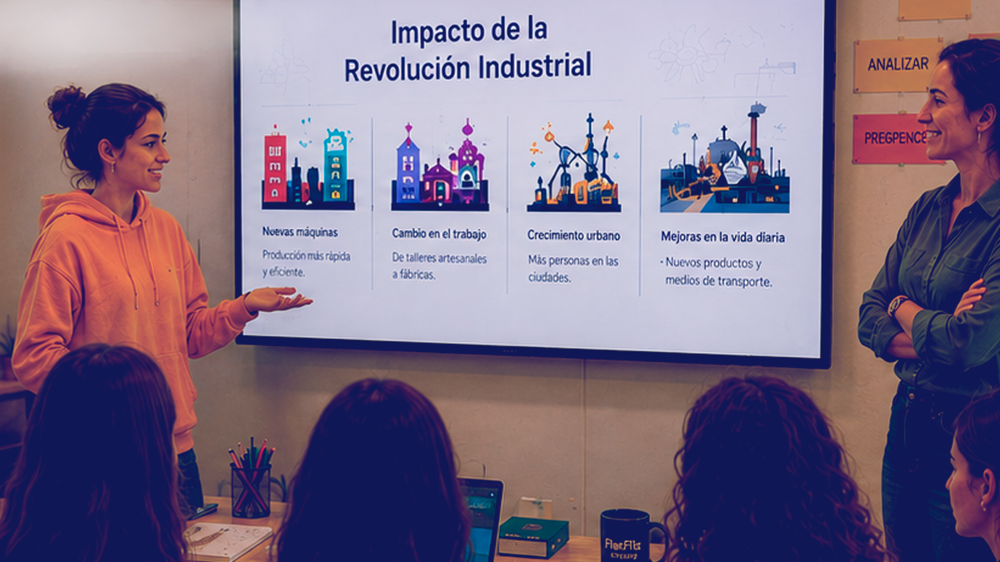
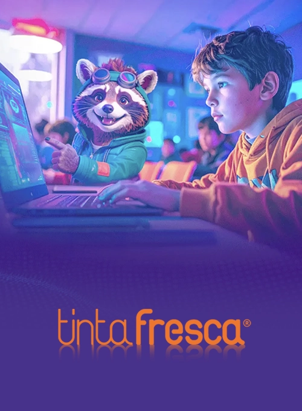
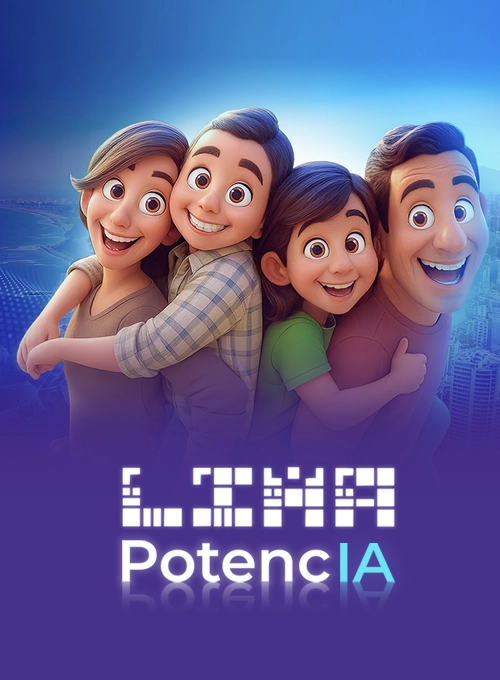
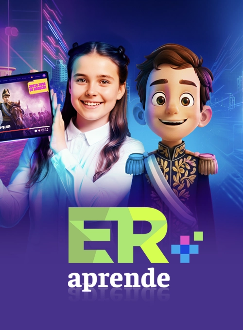
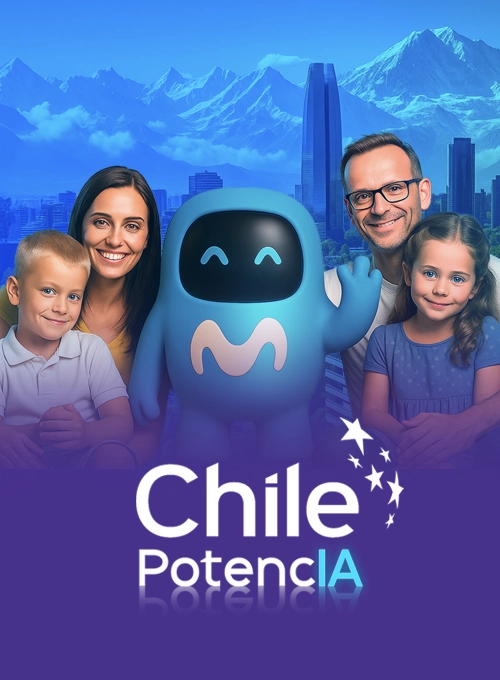
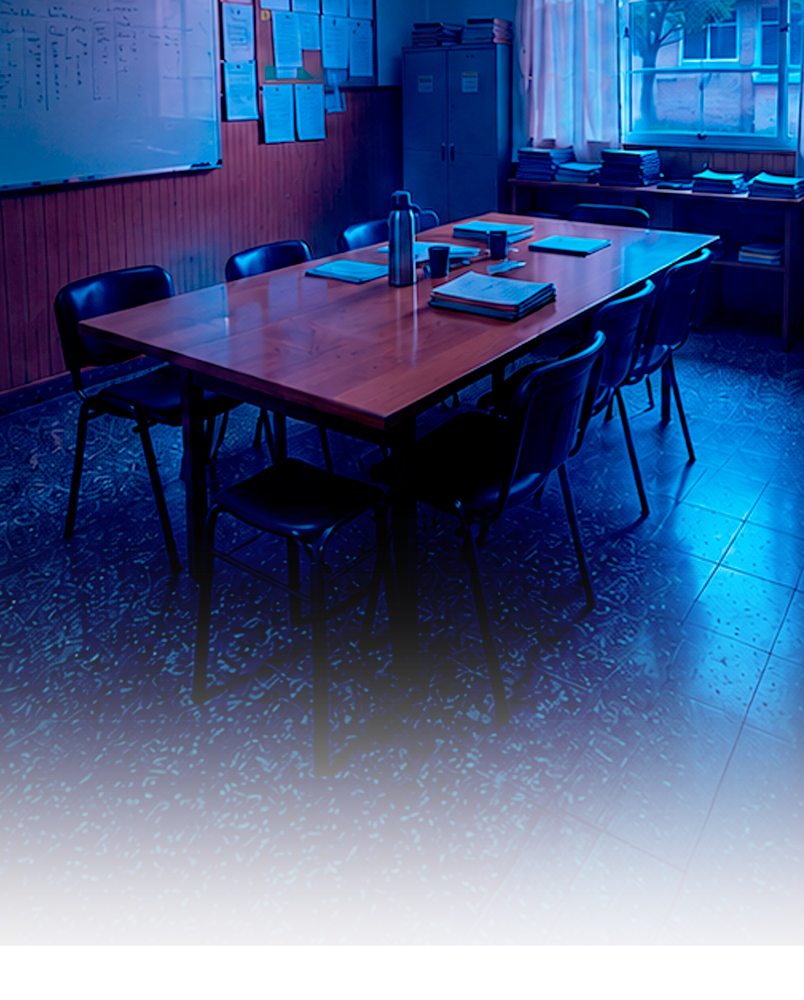

Sin arquitectura,
la IA automatiza.
Con arquitectura cognitiva,
la IA forma pensamiento.
FlexFlix es la arquitectura de gobernanza cognitiva para la era de la IA generativa: la infraestructura que permite que los sistemas educativos mantengan su soberanía cognitiva, formen pensamiento humano y midan su desarrollo cognitivo real.
Explorar metodología
Delegar comprensión
antes de desarrollar criterio
Cuando las personas empiezan a delegar comprensión antes de desarrollar criterio, la IA deja de amplificar y empieza a reemplazar el pensamiento
Sin arquitectura cognitiva
La IA es inteligencia aumentada, exocerebro, continuidad cognitiva del cerebro humano. Esa extensión reemplaza pensamiento cuando se delega sin pensar — cuando el alumno consulta antes de elaborar, acepta antes de cuestionar.
Good friction
FlexFlix está construido sobre el principio de good friction: la fricción que obliga al alumno a pensar antes de consultar, a justificar antes de aceptar, a preguntar antes de pedir respuesta. Es la condición de toda formación cognitiva en la era de la IA generativa.
Cognitive Governance Infrastructure.
*Soberanía cognitiva* es la capacidad de un sistema educativo de formar pensamiento autónomo en sus estudiantes y de auditar ese proceso con métricas propias, sin delegarlo a la lógica de proveedores de IA externos.
Una nueva categoría
No es una plataforma. No es un tutor IA. No es un LMS. Es una infraestructura diseñada para preservar, desarrollar, medir y amplificar la capacidad humana de pensar en la era de la inteligencia artificial.
El principio arquitectónico que organiza todo
Cuando la delegación ocurre antes de la comprensión, la IA automatiza superficialidad. Cuando ocurre después de la elaboración cognitiva, la IA amplifica pensamiento complejo, creatividad y construcción de conocimiento.
Regular
- Secuencias cognitivas controladas
- Filtros de profundidad y pertinencia
- Delegación consciente y trazable

Amplificar
- IA como amplificador, no sustituto
- Potencia del juicio y la creatividad docente
- Co-construcción cognitiva inteligente
Medir
- Índice de Desarrollo Cognitivo Autónomo (IDCA)
- Trazabilidad longitudinal real
- Analítica cognitiva profunda

Siete capas integradas. Una infraestructura
que gobierna la formación cognitiva
La arquitectura opera en siete capas integradas. Un ecosistema cerrado, seguro y evolutivo que genera aprendizaje real, medible y escalable.
01
SVOD Educativo
Base curricular multimodal de calidad cinematográfica
¿Qué es?
Plataforma de streaming educativo de calidad cinematográfica. Contenido curricular curado audiovisualmente que construye la base cognitiva desde la cual todos los alumnos piensan, conversan y crean.
Características
- Contenido audiovisual de calidad cinematográfica producido o curado pedagógicamente
- Homogeniza el punto de partida del grupo antes de la conversación con IA
- Multimodalidad: video, texto, simulaciones interactivas, animaciones
- Secuenciación curricular por nivel, materia y perfil cognitivo
- Base compatible y sincronizada con el motor PACCC
02
FlexClass · PACCC
Protocolo de interacción cognitiva
¿Qué es?
El motor operativo que organiza la experiencia cognitiva en el aula. Un protocolo de 5 pasos que transforma cada clase en una sesión de pensamiento estructurado.
Los 5 pasos
- Personaliza: el docente orquesta la experiencia, elige preguntas, herramientas y tiempos
- Aprende: el alumno construye presaber con contenido curado antes de tocar la IA
- Conversa: dialoga con FlexGPT socrático que repregunta en lugar de responder
- Crea: produce desde su comprensión — no desde el vacío ni copiando a la IA
- Comparte: entrega, recibe feedback del docente, el sistema calcula el IDCA
03
FlexGPT
Diferenciador radical
Capa socrática agnóstica de modelos
¿Qué es?
Capa socrática agnóstica de modelos. A diferencia de cualquier IA tutora del mercado, FlexGPT no responde: repregunta. Optimiza para que el estudiante elabore la respuesta, no para entregársela.
- ✕Resuelve la pregunta del estudiante
- ✕Premia la velocidad de respuesta
- ✕Reduce la fricción cognitiva
- ✕El estudiante recibe en lugar de elaborar
- ✕Atado a un solo modelo de IA
- ✓Le pide justificación a cada afirmación
- ✓Devuelve preguntas más profundas ante respuestas superficiales
- ✓Hace visibles las contradicciones del alumno
- ✓Sostiene la fricción cognitiva productiva
- ✓Agnóstica: funciona con GPT-4, Gemini, Claude, etc.
04
FlexFlow
Workflows · rúbricas · activación de hábitos
¿Qué es?
Sistema de workflows pedagógicos, rúbricas de evaluación y activación de hábitos cognitivos. Automatiza la secuencia de aprendizaje sin quitar el control al docente.
Características
- Diseño de flujos de aprendizaje personalizados por nivel y materia
- Rúbricas de evaluación del desarrollo cognitivo integradas al IDCA
- Activación de hábitos cognitivos: práctica espaciada, recuperación activa, elaboración
- Automatización pedagógica que libera al docente para el feedback humano
- Sincronización directa con el ciclo PACCC y las capas de medición
05
FlexMind · IDCA
Índice de Desarrollo Cognitivo Aumentado
¿Qué es?
Índice de Desarrollo Cognitivo Aumentado — la métrica que faltaba en la educación. No mide lo que el estudiante hace. Mide cómo piensa.
06
FlexGov
Dashboards ministeriales · auditoría · benchmark
¿Qué es?
Capa de gobierno institucional y ministerial del ecosistema cognitivo. Dashboards en tiempo real, auditoría del aprendizaje y benchmark entre instituciones con soberanía de datos garantizada.
Características
- Dashboards ministeriales con métricas de desarrollo cognitivo en tiempo real
- Auditoría de aprendizaje: qué se enseñó, qué se aprendió, qué se midió
- Benchmark entre instituciones con datos anonimizados y comparables
- Soberanía cognitiva: los datos son de la institución, no de FlexFlix
- Reportes de impacto exportables para ministerios y financiadores
07
FlexAgents
IA agéntica con human-in-the-loop
¿Qué es?
Agentes de IA autónomos con supervisión humana (human-in-the-loop) que automatizan tareas administrativas, pedagógicas y de análisis — sin delegar las decisiones críticas.
Características
- Agentes especializados por función: docencia, evaluación, administración, análisis
- Human-in-the-loop: el humano aprueba decisiones críticas, el agente ejecuta
- Automatización de correcciones rutinarias y generación de feedback inicial
- Análisis longitudinal del IDCA a escala masiva sin intervención manual
- Integración nativa con todas las capas del ecosistema FlexFlix
FlexGPT no responde. Repregunta.
A FAVOR DE LA RESPUESTA
EN CONTRA DEL PENSAMIENTO.
Optimiza para entregar la respuesta correcta lo más rápido posible.
- Resuelve la pregunta del estudiante
- Premia la velocidad
- Reduce la fricción cognitiva
- El estudiante recibe en lugar de elaborar
Contra la delegación.
A favor del criterio.
Optimiza para que el estudiante elabore la respuesta — no para entregarla.
- Le pide justificación a cada afirmación
- Devuelve preguntas más profundas ante respuestas superficiales
- Hace visibles las contradicciones
- Sostiene la fricción cognitiva productiva
IDCA — Índice de Desarrollo Cognitivo Aumentado
La métrica que faltaba en la educación. No mide lo que el estudiante hace. Mide cómo piensa.
Actividad. Tiempo en plataforma. Respuestas cerradas. Rendimiento superficial.
Externalización del pensamiento. Cómo el estudiante elabora con sus propias palabras a lo largo del tiempo.
Evaluación pre/post intra-sujeto + análisis semántico conceptual del cuaderno personal del estudiante.
PACCC: El motor operativo que
organiza la experiencia cognitiva
Personaliza
El docente ajusta contenido y secuencia al perfil cognitivo real del estudiante.
El docente personaliza la conversación de la clase para su grupo: elige las preguntas del reservorio curricular, suma las suyas, decide con qué herramienta de IA van a trabajar sus estudiantes, ajusta los tiempos. Acá se orquesta la experiencia cognitiva para este grupo, en este contexto, en este momento.
Aprende
El estudiante NO empieza con IA. Construye presaber: videos, lecturas, simulaciones, base cognitiva.
El alumno entra en contacto con el contenido curricular curado audiovisualmente. Se homogeniza el punto de partida del grupo, se instala el tema en el cuerpo cognitivo, se construye la base común desde la cual todos van a pensar, conversar y crear. El contenido de calidad como punto de partida es la condición de la fricción posterior.
Conversa
Argumenta, justifica, explica con FlexGPT — que repregunta en lugar de responder.
FlexFlixGPT es socrática por diseño: re-pregunta, devuelve contraejemplos, exige justificar. En su cuaderno personalizado, el alumno responde las preguntas asignadas por el docente y suma las que él mismo necesita para comprender. Cuestiona, significa, transfiere, mapea, se pregunta para qué está aprendiendo lo que está aprendiendo. Deja de describir para comprender.
Crea
Recién ahora con IA: produce desde elaboración previa, no desde el vacío.
Si el principio es "pensar primero, IA después", Crea es donde se ve ese pensar. El alumno usa herramientas de IA para externalizar lo que entendió. Produce algo propio a partir de su comprensión, y en esa producción forja identidad cognitiva: se reconoce como alguien capaz de pensar, no solo de consumir pensamiento.

Comparte
Presenta, recibe feedback, consolida. La comprensión se vuelve visible y medible.
El alumno entrega su conversación con FlexFlixGPT y sus producciones con IA. El docente devuelve feedback personalizado a cada estudiante. Y junto con la Prueba previa y la Prueba posterior que enmarcan la experiencia, el sistema calcula el IDCA (Índice de Desarrollo Cognitivo Aumentado): cuánto avanzó cada alumno, cuánto se logró formar.
Personaliza
Aprende
Conversa
Crea
Comparte
Despliegues activos en 6 jurisdicciones.
No es un prototipo. Son cohortes reales con datos longitudinales en producción.

Plan Ceibal
Integración con la infraestructura digital nacional más consolidada de América Latina.

Perú Potencia
Iniciativa nacional de educación digital con despliegue a escala.

ER Aprende+
Programa provincial de transformación educativa con IA estructurada.
Mendoza Aumentada
100 escuelas secundarias públicas. Etapa I + Etapa II operando con el programa Operadores en IA.
Ciudad de Buenos Aires
Despliegue activo en escuelas primarias de la Ciudad Autónoma de Buenos Aires.

Chile
Implementación con metodología PACCC en establecimientos educativos.
Catamarca
Implementación provincial en nivel primario con metodología PACCC.
Tres audiencias. Tres compromisos.
FlexFlix.ai opera en todos los niveles del sistema educativo — desde la decisión política hasta el aula.
Para quien decide políticas
- Soberanía cognitiva auditable
- Evidencia longitudinal IDCA
- Invariantes pedagógicos protegidos contractualmente
- Caso operativo replicable en múltiples jurisdicciones
- Arquitectura auditable en lugar de servicio extranjero opaco

Para quien gestiona la escuela
- Dashboards estratégicos por escuela y aula
- Trazabilidad compartida con familias
- Formación docente integrada en el contrato
- Integración con SIS y LMS existentes
- Menos administración operativa, más conducción pedagógica
Para quien enseña
- El docente como transpositor amplificado, no sustituido
- FlexGPT que repregunta, no resuelve
- Menos planificación operativa, más conducción cognitiva
- Productos diversos para evaluar comprensión real
- La IA al servicio del juicio docente
El próximo paso.
Lo que podemos hacer juntos en tres reuniones:
Sesión de diagnóstico
- Mapeamos tu contexto, desafíos y objetivos
- Identificamos oportunidades de impacto real
- Entendemos a fondo tu realidad institucional
Demo con cohorte real
- FlexGPT en acción con estudiantes reales
- Caso de uso alineado a tu contexto
- Métricas IDCA en tiempo real visibles
Diseño de piloto
- Definimos alcance, métricas e integración
- Cronograma y roadmap de ejecución
- IDCA esperado y criterios de éxito claros